Generar Orden de Compra desde Financiamiento Agrícola
Ubique y seleccione en el menú de ADempiere, la carpeta “Gestión de Asistencia al Agricultor”, luego seleccione la carpeta “Inversión Agrícola y Préstamos”. Por último seleccione la ventana de búsqueda inteligente “Generar Orden de Compra (Desde Financiamiento Agrícola)”.
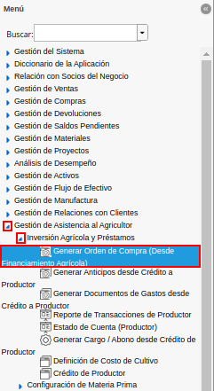
Imagen 1. Menú de ADempiere
Podrá visualizar la ventana de búsqueda inteligente (smart browser) “Generar Orden de Compra (Desde Financiamiento Agrícola)”, con diferentes campos que permite filtrar la información para generar el documento enm base a lo requerido por el usuario.
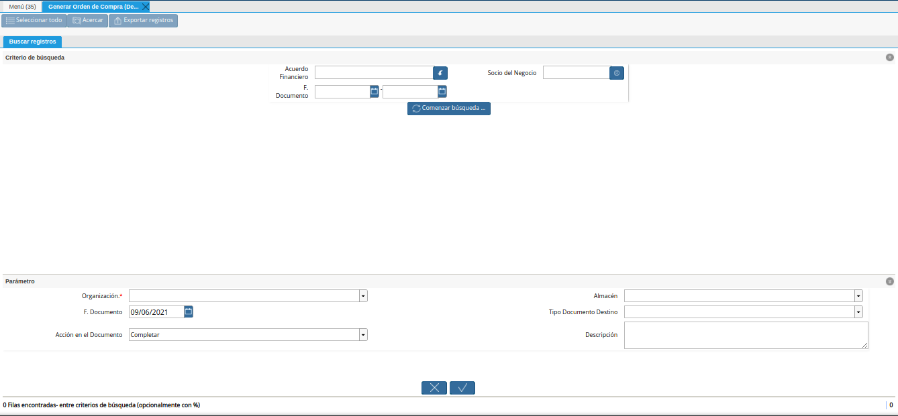
Imagen 2. Ventana del Smart Browser
Seleccione en el campo “Acuerdo Financiero”, el acuerdo financiero para filtrar la información.
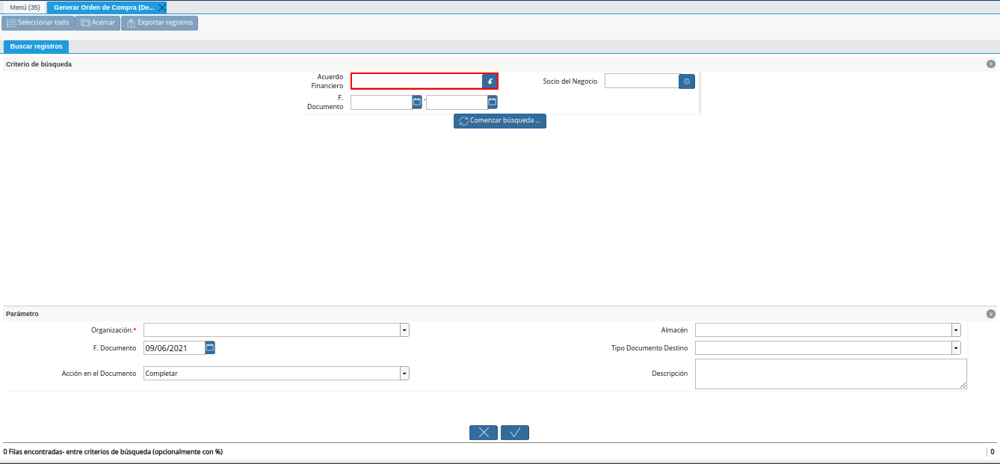
Imagen 3. Campo Acuerdo Financiero
Seleccione en el campo “Socio del Negocio”, el socio del negocio para filtrar la información.
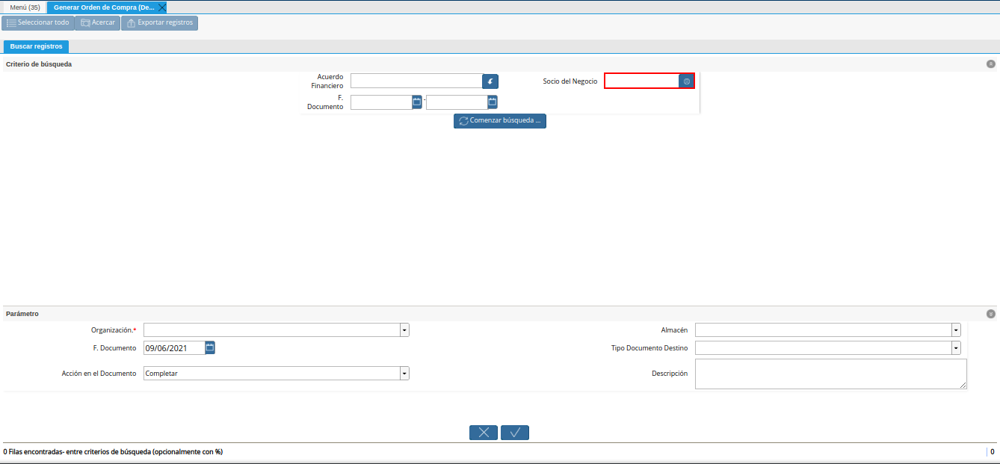
Imagen 4. Campo Socio del Negocio
Seleccione en el campo “F. Documento, el rango de fecha del documento para filtrar la información.
Imagen 5. Campo F. Documento
Seleccione la opción “Comenzar Búsqueda”, para realizar la búsqueda de la información en base a lo seleccionado en los campos nombrados anteriormente.
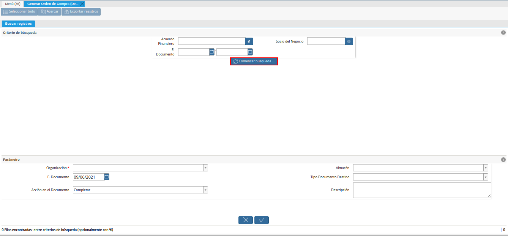
Imagenn 6. Opción Comenzar Búsqueda
Podrá visualizar los resultados de la búsqueda en base a lo seleccionado en los campos indicados anteriormente.
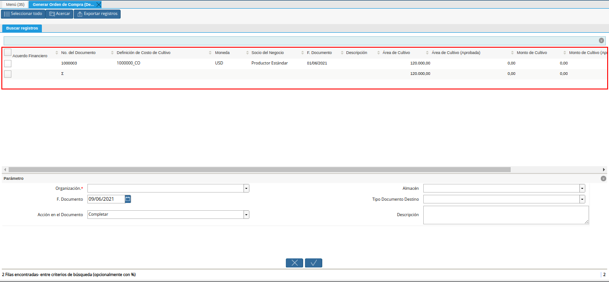
Imagen 7. Resultados de Búsqueda
Seleccione el registro de acuerdo financiero o crédito de productor por el cual requiere generar el documento “Orden de Compra”.
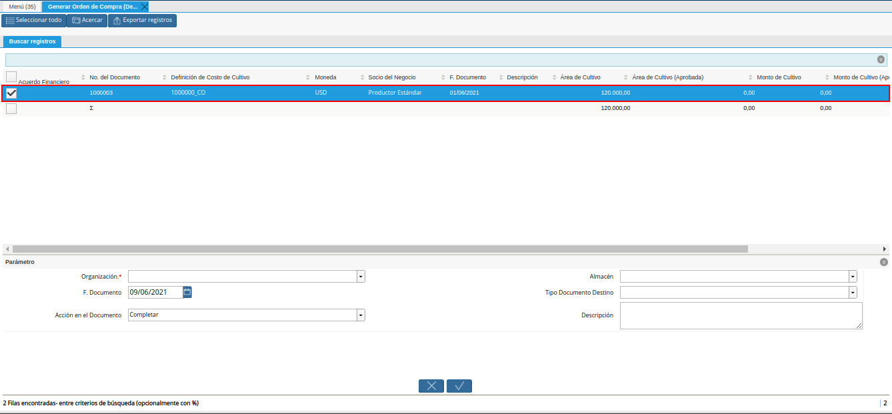
Imagen 8. Selección de Registro
Seleccione en el campo “Organización”, la organización para la cual requiere generar el documento “Orden de Compra”.
Imagen 9. Campo Organización

Seleccione en el campo “Almacén”, el almacén para el cual requiere generar el documento “Orden de Compra”.
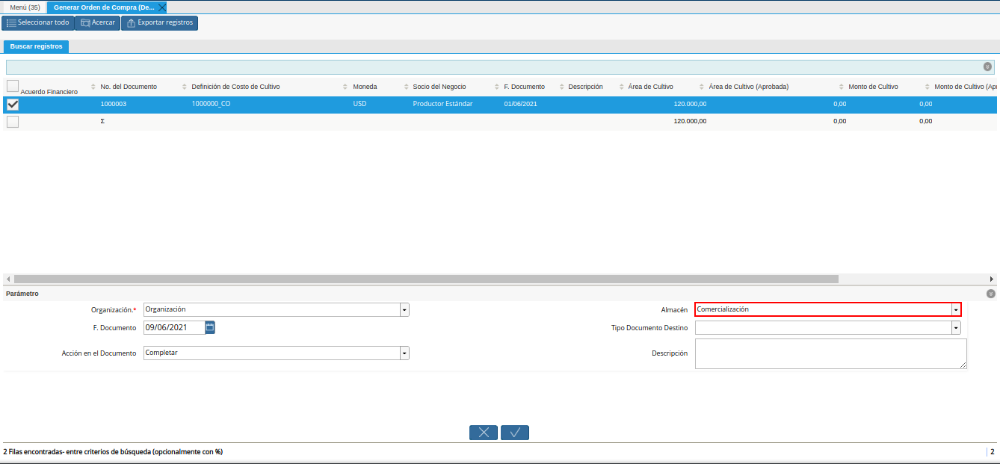
Imagen 10. Campo Almacén
Seleccione en el campo “F. Documento”, la fecha con la cual requiere generar el documento “Orden de Compra”.
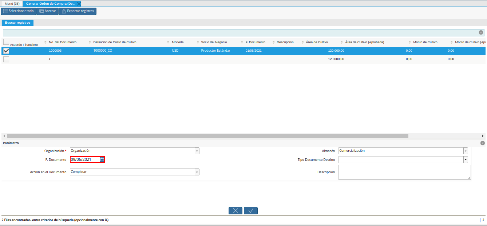
Imagen 11. Campo F. Documento
Seleccione en el campo “Tipo de Documento Destino”, el tipo de documento destino con el cual requiere generar el documento “Orden de Compra”.
Imagen 12. Campo Tipo de Documento Destino
Seleccione en el campo “Acción en el Documento”, la acción de documento con la cual requiere que se genere el documento “Orden de Compra”.
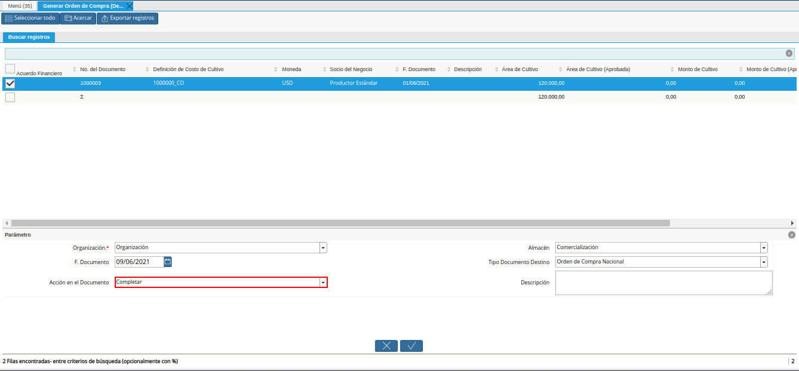
Imagen 13. Campo Acción en el Documento
Introduzca en el campo “Descripción”, una breve descripción referente al documento “Orden de Compra” que requiere generar.
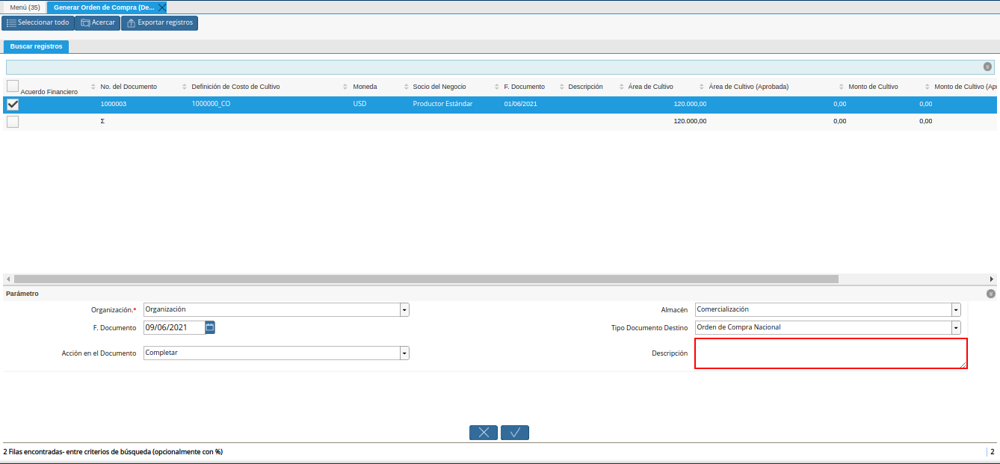
Imagen 14. Campo Descripción
Seleccione la opción “OK”, para ejecutar el proceso y generar el documento “Orden de Compra”, según lo requerido por el usuario.
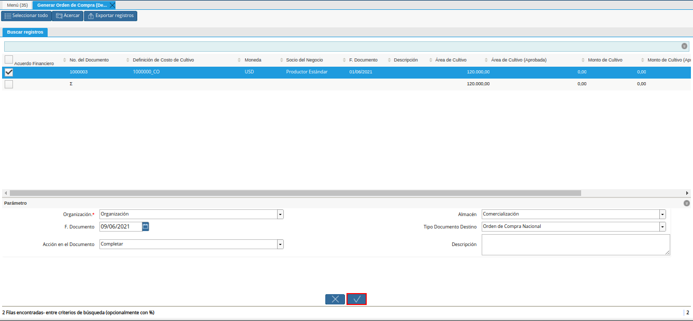
Imagen 15. Opción OK
Podrá visualizar el registro del documento “Orden de Compra”, generado con el número de documento “OCN-86” de la siguiente manera.
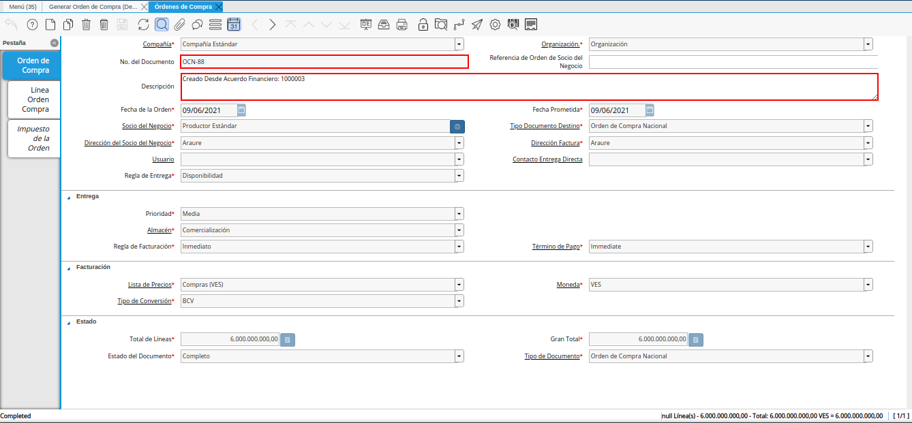
Imagen 16. Orden de Compra